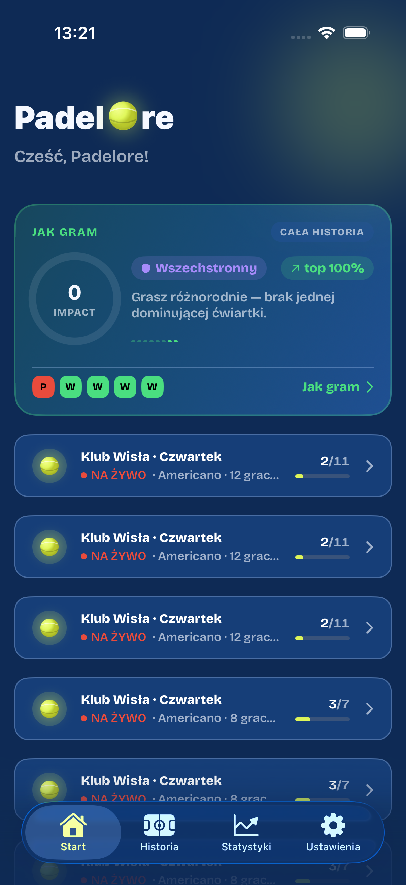
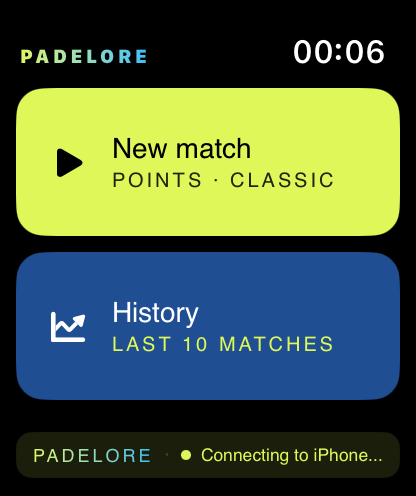

Playtomic rezerwuje kort i znajduje grajkę. Ale kiedy już grasz — nikt nie liczy wyniku, a po meczu wiesz tylko, czy poziom drgnął. Padelore liczy mecz z Apple Watch (wynik na żywo jak tablica na kracie) i czyta tętno oraz ruch. Po meczu dostajesz kartę meczu i profil „jak grasz” — czego nie pokaże żadna apka do bookingu.


Nie wymieniaj apki do rezerwacji — zostaw ją do tego, w czym jest dobra. Padelore zaczyna w sekundzie, w której wchodzisz na kort: liczy mecz z zegarka i po gwizdku pokazuje grę, której żaden booking nie widzi.
Padelore nie rezerwuje kortów i nie szuka graczy — i nie udaje, że to robi. Robi jedną rzecz, której nie robi nikt inny: zamienia każdy Twój mecz w dane, z których naprawdę się uczysz.
Pełny przepływ pojedynczego meczu: konfigurujesz pary na telefonie, wybierasz Apple Watch do rejestracji wyniku, liczysz kciukiem na nadgarstku, a telefon pokazuje wynik na żywo.
Apple Watch liczy nie tylko punkty — czyta też tętno i ruch. Po meczu Padelore składa to w jedną kartę: wynik, Match Effort (ile mecz kosztował), przebieg punkty × tętno i regenerację. Z dwóch danych, które już zbierasz — log punktów i Apple Health.
Ta sama wygrana 13:8 może być spacerkiem albo wojną — dopiero tętno to pokazuje. Karta meczu odpowiada na pytania, których nie ma żadna apka do padla.
Dane zdrowotne zostają na Twoim urządzeniu.
Na padlowych forach wraca to samo: gracz wie, ile wygrał — ale nie wie, dlaczego. Żadna apka do padla tego nie liczy. Padelore odpowiada: po punkcie masz 4 sekundy, żeby jednym tapnięciem na zegarku oznaczyć źródło — Ja, partner czy rywale. Nie chcesz — pomijasz, wynik leci dalej.
Wynik po każdym punkcie jednym tapnięciem, bez telefonu w ręku.
Americano i Mexicano same układają rundy, korty i pauzy.
Mecze budują tabelę ekipy i Twój globalny ranking.
Wynik powstaje z każdego punktu — spójny telefon ⇄ zegarek.
Americano, Mexicano albo singiel, korty, punktacja — ustawiasz w kilku krokach, a apka prowadzi całą rozgrywkę i liczy rundy.
Americano (każdy gra z każdym) czy Mexicano (kojarzenie wg formy). Indywidualnie, pary, mix — a teraz także singiel 1 na 1, z czytelnym piktogramem kortu.
Każda runda rozpisana na korty. Wpisujesz wynik na telefonie albo bierzesz go prosto z zegarka — badge „Z zegarka" pokazuje mecze liczone na nadgarstku. Obróć telefon poziomo — staje się wielką tablicą na kracie, a wynik wpiszesz bez obracania go z powrotem.
Z turniejów i pojedynczych meczy budujesz własne, lokalne rankingi w swojej paczce. Każdy wynik wpada do jednej tabeli, a pozycję liczy „TrueSkill” — system od Microsoftu, którym Xbox Live dobiera graczy — więc ranking jest uczciwy, nie tylko „kto zagrał najwięcej”.
Ekran „Ja" składa wszystkie Twoje mecze w jeden profil. Impact Rating to liczba, którą śledzisz i podnosisz. Mapa wynik × wysiłek pokazuje Twój styl: kiedy masz łatwo, a kiedy wygrywasz drogo — i z kim grać dalej.
Druga soczewka ekranu statystyk czyta Apple Health: obciążenie tydzień po tygodniu, tętno w strefach i regenerację. „Gdzie jesteś" pokazuje Cię dziś kontra Ciebie sprzed 3 miesięcy — i wydolność na tle Twojego rocznika.
Dane zdrowotne zostają na Twoim urządzeniu.
Pobierz Padelore na iPhone i Apple Watch — działa obok Twojej apki do rezerwacji, nie zamiast niej.